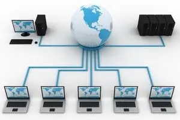

© Sajedul Islam Tushar
তথ্য ও যোগাযোগ প্রযুক্তি
অধ্যায় ০২: কমিউনিকেশন সিস্টেমস ও নেটওয়ার্কিং
ডেটা কমিউনিকেশন (Data Communication) কী?
কমিউনিকেশন শব্দটি Communicare শব্দ হতে এসেছে যার অর্থ to share (আদান-প্রদান/ বিনিময়) । যন্ত্র বা বিভিন্ন কমিউনিকেশন ডিভাইস ব্যবহার করে পরস্পরের মধ্যে নির্ভরযোগ্যভাবে ডেটা বা তথ্যের আদান-প্রদান হচ্ছে ডেটা কমিউনিকেশন (Data Communication)।
Note: ডেটা কমিউনিকেশনের কার্যকারীতা মূলত তিনটি জিনিসের উপর নির্ভর করে।
১) ডেলিভেরি (Delivery) ২) অ্যাকুরেসি (Accuracy) ৩) টাইমলাইনস (Timeliness)

ডেটা ট্রান্সমিশন স্পিড বা ব্যান্ডউইথ (Bandwidth) কী?
প্রতি একক সময়ে বা প্রতি সেকেন্ডে যে পরিমাণ ডাটা এক কম্পিউটার থেকে অন্য কম্পিউটারে বা এক ডিভাইস থেকে অন্য ডিভাইসে স্থানান্তর করা হয়, তাকে ডাটা ট্রান্সমিশন স্পিড বলা হয়। এই ডাটা ট্রান্সমিশন স্পিডকে ব্যান্ডউইডথ বলা যেতে পারে। প্রতি সেকেন্ডে কত বিট ডেটা ট্রান্সফার হতে পারে তার উপর ভিত্তি করে ডেটা ট্রান্সমিশন স্পীড হিসাব করা হয় । অর্থাৎ ব্যান্ডউইথ একক হলো বিট পার সেকেন্ড (bps)।
Note:ডেটা ট্রান্সমিশন স্পীডকে মূলত তিন ভাগে ভাগ করা হয়ে থাকে।
১) ন্যারো ব্যান্ড (Narrow Band) ২) ভয়েস ব্যান্ড (Voice Band) ৩) ব্রডব্যান্ড (Broad Band)
Bandwidth Calculation:
Bit- 0,1 1Byte= 8 bit 1KB= 1024B 1MB=1024KB
1GB= 1024MB 1TB= 1024GB
ন্যারোব্যান্ড (Narrow Band) কী?
যদি কোন নেটওয়ার্ক চ্যানেলের ডেটা ট্রান্সমিশন স্পীড 45bps হতে 300bps পর্যন্ত হয়ে থাকে তবে তাকে ন্যারোব্যান্ড (Narrow Band) বা সাব-ভয়েস (Sub-voice) ব্যান্ড বলা হয়। এই ব্যান্ড সাধারনত ধীরগতির ডেটা স্থানান্তরের ক্ষেত্রে ব্যবহার করা হয়ে থাকে। টেলিগ্রাফ মেশিনে এই ট্রান্সমিশন স্পীড ব্যবহার করা হতো।
ব্রডব্যান্ড (Broad Band) কী?
উচ্চগতিসম্পন্ন ডেটা ট্রান্সমিশন সিস্টেমকে ব্রডব্যান্ড(Broad Band) বলা হয়ে থাকে। উচ্চগতির ইন্টারনেট ব্যবস্থার ক্ষেত্রে ব্রডব্যান্ড এর ব্যবহার বর্তমানে সবথেকে বেশি। ব্রড ব্যান্ডের ডেটা ট্রান্সমিশন স্পিড কমপক্ষে ১ Mbps হতে ২৫Mbps পর্যন্ত হয়ে থাকে।
© Sajedul Islam Tushar
সাধারণত কো-এক্সিয়াল ক্যাবল, স্যাটেলাইট, সাইবার লাইন (DSL-Digital Satellite Link), অপটিক্যাল ফাইবারে ডেটা স্থানান্তরে ব্রডব্যান্ড ব্যবহৃত হয়।
ভয়েসব্যান্ড (Voice Band) কী?
ভয়েস ব্যান্ডের ডেটা ট্রান্সমিশন স্প্রীড সাধারনত 9600bps বা 9.6kb পর্যত হয়ে থাকে। যদি কোন নেটওয়ার্ক চ্যানেলের ডেটা ট্রান্সমিশন স্পীড 300bps এর উপর হতে 9600bps পর্যন্ত হয়ে থাকে তবে তাকে ভয়েসব্যান্ড (Voice Band) বলা হয়। কম্পিউটার থেকে প্রিন্টারে অথবা Scanner থেকে কম্পিউটারে ডেটা আদান-প্রদানে ভয়েস ব্যান্ডের ব্যবহৃত হয়। Voice আদান-প্রদানে এটি বেশী ব্যবহৃত হয় বলে একে ভয়েস ব্যান্ড (Voice Band) বলে। টেলিফোন লাইনে ব্যবহৃত ডেটা ট্রান্সমিশন স্পীড ভয়েস ব্যান্ডের অন্যতম উদাহরণ।
সিগনাল (signal) কী ?
সিগনাল বলতে সময়ের সাথে ভোল্টেজের পরিবর্তনকে বোঝানো হয়। যখন ভোল্টেজ শূন্য থাকে এবং সেখান থেকে বাড়তে বাড়তে উপরে উঠে তখন কিছু পরিবর্তন হয় এবং ভোল্টেজ কমার সাথে সাথে এটি নিচে নামতে থাকে। সময়ের সাথে ভোল্টেজের এই উঠা-নামাই হচ্ছে সিগনাল।
Signal কে দুই ভাগে ভাগ করা যায়- ১। Analog Signal. ২। Digital Signal.

Note: ডিজিটাল সিগনালের ওয়েভফর্মকে বলা হয় স্কয়ার ওয়েভ এবং এনালগ সিগনালের ওয়েভফর্মকে বলা হয় সাইন ওয়েভ। একটি ওয়েভের সর্বোচ্চ ও সর্বনিম্ন পয়েন্টের দূরত্বকে বলা হয় এমপ্লিচ্যুড বা বিস্তার। একটি সিগনাল এর এমপ্লিচ্যুড যত বেশি হবে সেই সিগনাল তত বেশি শক্তিশালী হবে। সিগনাল এর এই শক্তিকে মাপা হয় এম্পিয়ার হিসেবে।
Analog Signal or এনালগ সিগন্যালঃ সময়ের সাথে পরিবর্তনশীল বৈদ্যুতিক সিগন্যালকে এনালগ সিগন্যাল বলে। এনালগ সিগন্যালের অ্যামপ্লিচিউড সর্বোচ্চ এবং সর্বনিম্ন মানের মধ্যে যে কোন মান গ্রহণ করতে পারে।
Digital Signal or ডিজিটাল সিগন্যালঃ ডিজিটাল সিগন্যাল এমন একটি সিগন্যাল যা সাধারণত দুটি বা নির্দিষ্ট কয়েকটি ভোল্টেজ লেভেল নিয়ে গঠিত। ডিজিটাল সিগন্যালের ভোল্টেজ লেভেল দুটিকে ০ এবং ১ দ্বারা প্রকাশ করা হয়।
ডেটা ট্রান্সমিশন মেথড (Data transmission method) কী?
ডেটা কমিউনিকেশনে উৎস থেকে ডেটা গন্তব্যে পাঠানোর সময় একটি নির্দিষ্ট পদ্ধতিতে পাঠানো হয়ে থাকে। যে পদ্ধতিতে ডেটা উৎস থেকে গন্তব্যে বা এক কম্পিউটার থেকে অন্য কম্পিউটারে ট্রান্সমিট হয়ে থাকে তাকে ডেটা ট্রান্সমিশন মেথড (Data transmission method) বলে।
উৎস থেকে গন্তব্যে ডেটা দুটি পদ্ধতিতে ট্রান্সমিট হয়ে থাকে। ১. প্যারালাল ট্রান্সমিশন ২. সিরিয়াল ট্রান্সমিশন
© Sajedul Islam Tushar
প্যারালাল ট্রান্সমিশন (Parallel transmission) কী?
যে ট্রান্সমিশনে ডেটা প্যারালাল বা সমান্তরালভাবে আদান প্রদান হয় তাকে প্যারালাল ডেটা ট্রান্সমিশন বলে। এই পদ্ধতিতে ডেটা বিট ভিন্ন ভিন্ন লাইনের মধ্যে দিয়ে একই সাথে পাঠানো হয়ে থাকে ।
Note: প্যারালাল ট্রান্সমিশনে ডেটা সাধারণত ৮ বিট, ১৬ বিট বা ৩২ বিট ইত্যাদি উপায়ে চলাচল করতে পারে।
সিরিয়াল ট্রান্সমিশন (Serial transmission)কী?
যে ট্রান্সমিশনে একটি মাত্র লাইন ব্যবহার করে ডেটা পর্যায়ক্রমে ১ বিট করে আদান প্রদান করা হয়ে থাকে তাকে সিরিয়াল ডেটা ট্রান্সমিশন বলে। এই পদ্ধতিতে একসাথে আট বিট ডেটা করে পাঠানো হয়ে থাকে। উৎস থেকে গন্তব্যের দূরত্ব বেশী হলে সধারনত এই পদ্ধতি ব্যবহার করা হয়ে থাকে।
বিট সিনক্রোনাইজেশন (Bit synchronisation) কী?
সিরিয়াল ডেটা ট্রান্সমিশনে এক কম্পিউটার থেকে অন্য কম্পিউটারে ডেটা ট্রান্সমিশন হওয়ার সময় অবশ্যই দুই কম্পিউটারের মধ্যে এমন একটি সমন্বয় ব্যবস্থা থাকা দরকার যাতে সিগনাল বিটের শুরু ও শেষ বুঝতে পারে। বিটের শুরু ও শেষ বুঝতে না পারলে গ্রহীতা কম্পিউটার সেই সিগনাল থেকে ডেটা পুনরুদ্ধার করতে পারে না। সিরিয়াল ডেটা ট্রান্সমিশনে ডেটা ট্রান্সমিট করার সময় ডেটার বিট গুলোর মধ্যে যে সমন্বয় করা হয় তাকে বিট সিনক্রোনাইজেশন (Bit synchronisation) বলে।
Note: বিট সিনক্রোনাইজেশনের উপর ভিত্তি করে সিরিয়াল ডেটা ট্রান্সমিশনকে তিন ভাগে ভাগ করা যায়।
- ১। অ্যাসিনক্রোনাস (Asynchronous) ডেটা ট্রান্সমিশন,
- ২। সিনক্রোনাস (synchronous) ডেটা ট্রান্সমিশন,
- ৩। আইসোক্রনাস (Isnchronous) ডেটা ট্রান্সমিশন।
অ্যাসিনক্রোনাস ডেটা ট্রান্সমিশন (Asynchronous Transmission) কী?
যে ডেটা ট্রান্সমিশন সিস্টেমে ডেটা প্রেরক হতে গ্রাহক কম্পিউটারে ক্যারেক্টার বাই ক্যারেক্টার ট্রন্সমিট হয় তাকে অ্যাসিনক্রোনাস ট্রান্সমিশন বলে । অ্যাসিনক্রোনাস ট্রান্সমিশনে প্রতিটি ক্যারেক্টার ট্রান্সমিট করার মধ্যবর্তী বিরতি সময় অসমান হয়ে থাকে। এই পদ্ধতিতে প্রতিটি ক্যারেক্টার এর 8 বিটের সাথে একটি স্টার্ট বিট এবং শেষে একটি বা দুটি স্টপ বিট যুক্ত করে প্রতিটি ক্যারেক্টার 10 অথবা 11 বিটের ডেটায় পরিণত করে তারপর ট্রন্সমিট করা হয়। কী-বোর্ড থেকে কম্পিউটারে কিংবা কম্পিউটার থেকে প্রিন্টারে ডেটা পাঠানোর জন্য এ পদ্ধতি ব্যবহৃত হয়।
Note: কীবোর্ড হতে কম্পিউটারে, কম্পিউটার হতে প্রিন্টারে, কম্পিউটার হতে কার্ড রিডারে, কম্পিউটার হতে পাঞ্চকার্ড এ অ্যাসিনক্রোনাস ট্রান্সমিশন ব্যবহার করা হয়।
© Sajedul Islam Tushar
সিনক্রোনাস ডেটা ট্রান্সমিশন (Asynchronous Transmission) কী?
যে ডেটা ট্রান্সমিশন সিস্টেমে ডেটাকে প্রথমে একটি প্রাইমারি স্টোরেজ ডিভাইস ব্যবহার করে সংরক্ষণ করে ডেটাকে ব্লক বা প্যাকেট আকারে ভাগ করে প্রতিবারে একটি করে ব্লক ট্রান্সমিট করা হয় তাকে সিনক্রোনাস ট্রান্সমিশন বলে।
সিনক্রোনাস ট্রান্সমিশনে প্রতিটি ব্লক ট্রান্সমিট করার মধ্যবর্তী বিরতি সময় সব সময় সমান থাকে। প্রতিটি ব্লকের শুরুতে একটি হেডার ইনফরমেশন ও শেষে একটি ট্রেইলার ইনফরমেশন যুক্ত করা হয়। কম্পিউটার হতে কম্পিউটারে, কম্পিউটার বা একাধিক ডিভাইসে একই সাথে ডেটা ট্রান্সমিট করতে এই পদ্ধতি ব্যবহার করা হয়।
আইসোক্রনাস ডেটা ট্রান্সমিশন (Isnchronous Transmission) কী?
অ্যাসিনক্রোনাস ও সিনক্রোনাস ডেটা ট্রান্সমিশন এর সমন্বিত রুপ হলো আইসোক্রনাস ডেটা ট্রান্সমিশন, যাকে আবার সিনক্রোনাস ট্রান্সমিশনের উন্নত ভার্সনও বলা হয়ে থাকে। এই পদ্ধতিতে ডেটা সুষম বিটরেটে ট্রান্সমিট হয়ে থাকে। এ পদ্ধতিতে প্রেরক হতে প্রাপকে অ্যাসিনক্রোনাস পদ্ধতির স্টার্ট ও স্টপ বিটের মাঝে ব্লক আকারে ডেটা স্থানান্তরিত হয়। এখানে দু’টি ব্লকের মধ্যে সময়ের পার্থক্য একেবারে 0 (শূন্য) রাখার চেষ্টা করা হয়। রিয়েলটাইম অ্যাপ্লিকেশন বা মাল্টিমিডিয়া ( অডিও, ভিডিও, ইমেজ ইত্যাদি) ফাইল ট্রন্সমিট করার জন্য আইসোক্রনাস ট্রান্সমিশন ব্যবহার করা হয়।
ডেটা ট্রান্সমিশন মোড (Data Transmission Mode) কী?
ডেটা ট্রান্সমিশনের সময় ডেটা উৎস থেকে উৎপন্ন হয়ে একটি নির্দিষ্ট দিকে প্রবাহিত হয়। উৎস থেকে গন্তব্যে ডেটা ট্রান্সফারের ক্ষেত্রে ডেটা প্রবাহের দিককে ডেটা ট্রান্সমিশন মোড (Data Transmission Mode) বলা হয়।
Note: ডেটা প্রবাহের দিকের উপর ভিত্তি করে ডেটা ট্রান্সমিশন মোডকে তিন ভাগে ভাগ করা যায়।
১) সিমপ্লেক্স (Simplex) ২) হাফ ডুপ্লেক্স (Half- Duplex) ৩) ফুল ডপ্লেক্স (Full-Duplex)
প্রাপকের সংখ্যা ও ডেটা গ্রহণের অধিকারের উপর ভিত্তি করে ডেটা ট্রান্সমিশন মোডকে তিন ভাগে ভাগ করা যায়।
১) ইউনিকাস্ট (Unicast) ২) ব্রডকাস্ট (Broadcast) ৩) মাল্টিকাস্ট (Multicast)
ইউনিকাস্ট ডেটা ট্রান্সমিশন মোড (Unicast Mode) কী?
যে ট্রান্সমিশন পদ্ধতিতে একজন প্রেরক ও একজন গ্রাহক থাকে এবং এদের মধ্যে যে কমিউনিকেশন হয়ে থাকে তাকে ইউনিকাস্ট ডেটা ট্রান্সমিশন মোড বলে। ইউনিকাস্ট ডেটা ট্রান্সমিশন মোডে একটি মাত্র নোড থেকে কেবলমাত্র একটি নোডের মধ্যে ডেটা আদান-প্রদান করা হয়ে থাকে। এটি one-to-one বা পয়েন্ট টু পয়েন্ট মোড হিসেবেও পরিচিত। যেমন-ফ্যাক্স, টেলিফোন, মোবাইল ফোন, ওয়াকিটকি, একক এসএমএম ইত্যাদি।
ব্রডকাস্ট ডেটা ট্রান্সমিশন মোড (Broadcast Mode) কী?
যে ট্রান্সমিশন পদ্ধতিতে নেটওয়ার্কভুক্ত কোন নোড হতে ডেটা ট্রান্সমিট হলে ঐ নেটওয়ার্কভুক্ত সকল নোডই তা গ্রহণ করতে পারে তাকে ব্রডকাস্ট ডেটা ট্রান্সমিশন মোড বলে। এটি one-to-all মোড হিসেবেও পরিচিত। যেমন-টেলিভিশন ও রেডিও সম্প্রচার ইত্যাদি। ব্রডকাস্ট ট্রান্সমিশন শুধুমাত্র সিমপ্লেক্স হয়ে থাকে।
© Sajedul Islam Tushar
মাল্টিকাস্ট ডেটা ট্রান্সমিশন মোড (Multicast Mode) কী?
যে ট্রান্সমিশন পদ্ধতিতে নেটওয়ার্কভুক্ত কোন একটি নোড থেকে ডেটা প্রেরন করলে তা শুধুমাত্র নেটওয়ার্কের অধিনস্ত নির্দিষ্ট কিছু নোড সেটি গ্রহণ করতে পারে তাকে মাল্টিকাস্ট ডেটা ট্রান্সমিশন মোড বলে। যেমন- অডিও কনফারেন্স, ভিডিও কনফারেন্স, গ্রুপ SMS, MMS ইত্যাদি। মাল্টিকাস্ট হাফ-ডুপ্লেক্স ও ফুল-ডুপ্লেক্স হয়ে থাকে। একে 1-to-n ডেটা ট্রান্সমিশন মোড ও বলা হয়।
সিমপ্লেক্স মোড (Simplex Mode) কী?
যে ডেটা ট্রান্সমিশন পদ্ধতিতে ডেটা শুধুমাত্র একদিক থেকে প্রেরণ করা যায় তাকে সিমপ্লেক্স ডেটা ট্রান্সমিশন মোড বলে। সিমপ্লেক্স ডেটা ট্রান্সমিশনে সিগন্যাল কেবল একদিকে প্রবাহিত হতে পারে অর্থাৎ এই পদ্ধতিতে প্রেরক প্রান্ত শুধু ডেটা প্রেরন করতে পারবে আর গ্রাহক প্রান্ত সেই ডেটা শুধু গ্রহন করতে পারবে। এই ট্রান্সমিশনে প্রেরক কখনোই গ্রাহক হিসেবে বা গ্রাহক কখনোই প্রেরক হিসেবে কাজ করবে না। তাই এই মোডকে one-way বা একমুখী ডেটা ট্রান্সমিশন মোড ও বলা হয়। যেমন-কীবোর্ড, মনিটর, রেডিও, টেলিভিশন ইত্যাদি।
হাফ ডুপ্লেক্স মোড (Half-Duplex Modde) কী?
যে পদ্ধতিতে ডেটা উভয় দিক থেকে আদান-প্রদান করা যায়, কিন্তু তা একই সময়ে সম্ভব নয় তাকে হাফ-ডুপ্লেক্স ডেটা ট্রান্সমিশন মোড (Half-Duplex Modde) বলে। হাফ ডুপ্লেক্স ট্রান্সমিশনে ডেটা উভয় দিক থেকে প্রেরণের সুযোগ থাকে, কিন্তু সেটি একই সময়ে সম্ভব না। হাফডুপ্লেক্স মোডে যখন একটি ডিভাইস ডেটা প্রেরণ করে, তখন অন্যটিকে অপেক্ষা করতে হয়। এক প্রান্ত থেকে ডেটা পাঠানো হলে অপর প্রান্ত তা গ্রহন করার পর পুনরায় ডেটা প্রেরণ করতে পারবে এবং প্রথম প্রান্ত প্রেরণ করার পর তা গ্রহন করতে পারবে। যেমন- ওয়াকিটকি, শ্রেণীকক্ষে পাঠদান, ইন্টারনেট ইত্যাদি।
ফুল ডুপ্লেক্স মোড (Full-Duplex Mode) কী?
যে পদ্ধতিতে একই সময়ে ডেটা উভয় দিক থেকে আদান-প্রদান করা যায়, তাকে ফুল-ডুপ্লেক্স মোড বলে। এটি একটি two-way কমিউনিকেশন মোড। এই পদ্ধতিতে প্রেরক ও গ্রাহক একই সাথে ডেটা প্রেরন ও গ্রহন দুটোই করতে পারবে। Full-Duplex মোডে একটি সিঙ্গেল লাইন ব্যবহার করে ট্রাফিক একই সময়ে উভয় দিকে প্রবাহিত হতে পারে। যেমন- ল্যান্ডফোন, মোবাইল ফোন ইত্যাদি।
© Sajedul Islam Tushar
এটেনুয়েশন (Attenuation) কী ?
নেটওয়ার্ক মিডিয়ার মধ্যে দিয়ে সিগন্যাল একটি নির্দিষ্ট দূরত্ব অতিক্রম করার পর আস্তে আস্তে দুর্বল হয়ে পড়ে। দূরত্ব অতিক্রমের সাথে সাথে সিগন্যাল দূর্বল হয়ে যাওয়ার এই স্বভাবকে বলা হয় এটেনুয়েশন(Attenuation)। যে মিডিয়ার এটেনুয়েশন যত কম সেটি তত ভালো ।
EMI কী?
একাধিক ইলেকট্রোম্যাকনেটিক সিগনাল পরস্পরের কাছাকাছি আসলে একটি সিগনাল আরেকটি সিগনালকে প্রভাবিত করার চেষ্টা করে । একে ইলেকট্রোম্যাকনেটিক ইন্টারফেরেন্স বা EMI বলা হয়।
ক্রসটক (Crosstalk) কী?
তামার তার একটি আরেকটির কাছে থাকলে একটির সিগানাল আরেকটির সিগনালকে প্রভাবিত করে। একে ক্রসটক(Crosstalk) বলে।
রোমিং (Roaming) কী?
মোবাইল সার্ভিস প্রোভাইডারের কাভারেজ এরিয়া সীমাবদ্ধ থাকে। কাভারেজ এরিয়ার এই সীমাবদ্ধতা কাটিয়ে মোবাইল সার্ভিস প্রোভাইডাররা যে বিশেষ আন্তঃসংযোগ ব্যবস্থা গড়ে তুলেছে তাকে রোমিং বলে। যে মোবাইলটি ব্যবহার করা হচ্ছে সেটির কভারেজ এরিয়ার বাইরে গিয়েও অনবরত ডেটা সার্ভিস পাওয়াকে রোমিং বলা হয়।
মডুলেশন (Moulation) কী?
ডিজিটাল সংকেতকে এনালগ সংকেতে পরিবর্তন করার প্রক্রিয়াকে মডুলেশন বলে। টেলিযোগাযোগের ক্ষেত্রে মডুলেশন (Modulation) বলতে কোন পর্যাবৃত্ত তরঙ্গকে ব্যবহার করে একটি তথ্য সংকেত প্রেরণের জন্য উক্ত তথ্য সংকেতটিকে বিভিন্ন ভাবে পরিবর্তন করার প্রক্রিয়াকে বোঝায়।
ক্রমাটিক ডিসপারশন (Chromatic Disperson) কী?
অপটিকাল ফাইবারের মধ্যে দিয়ে ডেটা আলোক তরঙ্গে রূপান্তরিত হয়ে তারপর ট্রাসমিট হয়ে থাকে। বিভিন্ন তরঙ্গের আলোক সংকেত একই ক্যাবলের মধ্যে দিয়ে প্রবাহিত হওয়ার সময় কিছু আলোক তরঙ্গ তাদের দিক পরিবর্তন করে এদিক সেদিক হয়ে গন্ডগোল সৃষ্টি করতে পারে । একেই ক্রমাটিক ডিসপারশন (Chromatic Disperson) বলে।
ইভসড্রপিং (Eavesdropping) ও ইলেকট্রোম্যাগনেটিক স্পেকট্রাম কি?
ইভসড্রপিং বলতে সাধারনত কমিউনিকেশন সিস্টেমে অবৈধ ছেদ বোঝায়। এর ফলে যে কেউ বিনা অনুমতিতে কোন কমিউনিকেশন সিস্টেমে যুক্ত হয়ে সেটি ব্যবহার করতে পারে। ইলেকট্রোম্যাগনেটিক স্পেকট্রাম হলো বিভিন্ন ফ্রিকুয়েন্সির সমাহার।
রেডিও ওয়েভ (Radio Wave)কী ?
© Sajedul Islam Tushar
বেতার তরঙ্গ বা রেডিও তরঙ্গ এক প্রকারের তড়িৎ-চৌম্বকীয় বিকিরণ। 3 kHz থেকে 300 GHz ইলেকট্রোম্যাগনেটিক স্পেকট্রাম হলো রেডিও ওয়েভ। সাধারণত 10 kHz থেকে 1 GHz ফ্রিকুয়েন্সি রেডিও ওয়েভের জন্য বেশি ব্যবহৃত হয়। এটি সর্বাপেক্ষা বৃহত্তম তরঙ্গদৈর্ঘ্য বিশিষ্ট তড়িৎ চৌম্বকীয় বিকিরণ যার তরঙ্গদৈর্ঘ্যের সীমা ১ মিলিমিটার থেকে ১০,০০০ কিলোমিটার পর্যন্ত বিস্তিত হয়। রেডিও ওয়েভের তরঙ্গ দৈর্ঘ্য অনেক বেশি হওয়ায় এটি কম শক্তি সম্পন্ন হয় এবং অকল্পনীয় দুরত্ব পাড়ি দিতে পারে।
Note: প্রাকৃতিক উপায়ে বেতার তরঙ্গ সৃষ্টি হয় সাধারণতঃ বজ্রপাত বা মহাজাগতিক বস্তু থেকে এবং কৃষ্ণবস্তু বিকিরণের অংশ হিসেবেও এ তরঙ্গ পাওয়া যায়। কৃত্রিমভাবে তৈরীকৃত বেতার তরঙ্গ মোবাইল টেলিযোগাযোগ, বেতার যোগাযোগ, সম্প্রচার, রাডার , কৃত্রিম উপগ্রহের সাথে যোগাযোগ সহ অসংখ্য কাজে ব্যবহৃত হয়।
মাইক্রোওয়েভ (Microwave) কী?
মাইক্রোওয়েভ (Microwave) হলো হাই-ফ্রিক্যুয়েন্সি রেডিও ওয়েভ। 300MHz হতে 300GHz ফ্রিকোয়েন্সির ইলেকট্রোম্যাগনেটিক স্পেকট্রামকে বলা হয় মাইক্রোওয়েভ। মাইক্রোওয়েভের তরঙ্গের তরঙ্গ দৈর্ঘ্য 1mm থেকে 1m পর্যন্ত হয়ে থাকে। মাইক্রোওয়েভ সিস্টেম মূলত দুটি ট্রান্সসিভার নিয়ে গঠিত।
এর একটি সিগনাল ট্রান্সমিট করার কাজে এবং অন্যটি সিগনাল রিসিভ করার কাজে ব্যবহৃত হয়। মাইক্রোওয়েভ বাঁকা পথে চলতে পারে না। মাইক্রোওয়েভ সিস্টেমে ব্যবহৃত অ্যান্টেনা বড় কোন ভবন বা টাওয়ারের উপর বসানো হয় যাতে সিগনাল বাধাহীনভাবে বেশি দূরত্বে পাঠানো যায়।
Note: মাইক্রোওয়েভ দুই প্রকার। ১। টেরেস্ট্রিয়াল মাইক্রোওয়েভ (Terrestrial Microwave) ২। স্যাটেলাইট (Satellite)
ইনফ্রারেড (Infrared) কী?
ইলেক্ট্রোম্যাগনেটিক স্পেকট্রামের ৩০০ গিগাহার্জ হতে ৪০০ টেরাহার্জ পর্যন্ত ফিকুয়েন্সিকে বলে ইনফ্রারেড ওয়েব বা অবলোহিত বিকিরণ রশ্মি। ইনফ্রারেডের তরঙ্গ দৈর্ঘ্যের সীমা ১ মাইক্রোমিটার থেকে ১ মিলিমিটার পর্যন্ত বিস্তিত হয়ে থাকে। ইনফ্রারেড ওয়েভের তরঙ্গ দৈর্ঘ্য দৃশ্যমান আলোক তরঙ্গ দৈর্ঘ্য অপেক্ষা সামান্য বড়। এদের খালি চোখে দেখা যায় না। নিকটবর্তী দুটি ডিভাইসের মধ্যে যোগাযোগে ইনফ্রারেড ব্যবহিত হয়।
Note: ইনফ্রারেড তরঙ্গ আবিষ্কার করেন উইলিয়াম হার্শেল ।
ওয়্যারলেস ইন্টারনেট আক্সেস পয়েন্ট (Wireless Intrnet Acess Point) কী?
জনবহুল কোনো স্থান যেমন- শিক্ষা প্রতিষ্ঠানের ক্যাম্পাস, হাসপাতাল, বাস স্টেশন, রেলস্টেশন, বিমানবন্দর, অফিস-আদালত ইত্যাদি স্থানসমূহে অথবা বাসা-বাড়িতেও ওয়্যারলেস ইন্টারনেট সংযোগের জন্য ওয়্যারলেস ইন্টারনেট অ্যাক্সেস পয়েন্ট ব্যবহৃত হয়। ওয়্যারলেস ইন্টারনেট অ্যাক্সেস পয়েন্ট ব্যবহার করে মোবাইল ফোন বা স্মার্ট ফোন, ট্যাব, কম্পিউটার, ল্যাপটপ, নোটবুক, পিডিএ ইত্যাদি পোর্টেবল ডিভাইসে ওয়্যারলেস নেটওয়ার্ক অ্যাডাপ্টারের মাধ্যমে সহজে ইন্টারনেট সংযোগ প্রদান সম্ভব।
বর্তমানে দুই ধরনের ইন্টারনেট অ্যাকসেস পয়েন্ট বেশি ব্যবহৃত হচ্ছে। ১) হটস্পট ২) মোবাইল নেটওয়ার্ক ।
হ্যান্ড অফ প্রসেস ( Handoff process) ও হটস্পট (Hotspot) কী?
কল আবিচ্ছিন্ন রেখে এক বা একাধিক বেজ স্টেশন পরিবর্তন করার পদ্ধতিকে হ্যান্ড অফ প্রসেস Handoff process বলে।ইন্টারনেট আক্সেস পয়েন্ট ব্যবহার করে যখন নির্দিষ্ট কোন স্থানে বিভিন্ন পোর্টেবল ডিভাইস গুলোর মধ্যে যখন ইন্টারনেট অ্যাক্সেস করা হয় তখন তাকে হটস্পট বলে। হটস্পট হলো এক ধরনের ওয়্যারলেস নেটওয়ার্ক, যা বিভিন্ন কমিউনিকেশন ডিভাইসে যেমন- মোবাইল, কম্পিউটার, পিডিএ, ট্যাব, নেটবুক, নোটবুক, বা ল্যাপটপ ইত্যাদিতে ইন্টারনেট সংযোগ সরবরাহ করে। বর্তমানে জনপ্রিয় তিনটি হটস্পট (hotspot) প্রযুক্তি হলো— Bluetooth, Wi-Fi, WiMAX.
© Sajedul Islam Tushar
Bluetooth কী?
স্বল্প দূরত্বে ডেটা আদান-প্রদানের জন্য ব্যবহৃত একটি ওপেন ওয়ারলেস প্রটোকল নেটওয়ার্ক হচ্ছে Bluetooth। সাধারনত কাছাকাছি অবস্থিত দুই বা ততোধিক ডিভাইসের মধ্যে ডেটা আদান প্রদানের জন্য এটি ব্যবহার করা হয়। Bluetooth সাধারনত পারসোনাল এরিয়া নেটওয়ার্কে (PAN) কাজ করে। Bluetooth এর কার্যকরী পাল্লা হচ্ছে ১০ মিটার। তবে বিদ্যুৎ কোষের শক্তি বৃদ্ধি করে এর পাল্লা ১০০ মিটার পর্যন্ত বৃদ্ধি করা যেতে পারে। Bluetooth এর স্ট্যান্ডার্ড হচ্ছে IEEE 802.15.1। এটি মূলত 2.4 GHz ফ্রিকুয়েন্সি ব্যান্ডে কাজ করে।
Note: ১৯৯৪ সালে ডেটা ক্যাবলের বিকল্প হিসেবে টেলিকম জায়ান্ট এরিকসন কম্পানি সর্বপ্রথম Bluetooth টেকনোলজি আবিস্কার করে। দশম শতাব্দীতে রাজা Herald Bluetooth ডেনমার্ক ও নরওয়ের বিভিন্ন বিচ্ছিন্ন গোষ্টি ও সম্প্রদায়ের লোকদের মধ্যে যোগাযোগ ব্যবস্থা করে সবাইকে একই রাজ্য ও রাজার অধীনে নিয়ে আসে। সেই ধারনার সাথে মিল রেখে ডেনমার্কের রাজা Herald Bluetooth এর নামানুসারে এই প্রযুক্তির নামকরন Bluetooth করা হয়েছে।
সেল সিগনাল এনকোডিং (Cell signal Encoding) কী?
এনকোডিং পদ্ধতিতে বিভিন্ন ট্রান্সমিটার থেকে প্রেরিত সিগনাল গুলোকে পৃথক করার পদ্ধতিকে সেল সিগনাল এনকোডিং (Cell signal Encoding) বলে।
Wi-Fi কী?
Wireless Fidelity এর সংক্ষিপ্ত রূপ হচ্ছে Wi-Fi। ওয়াই-ফাই একটি তারবিহীন নেটওয়ার্কিং প্রযুক্তি যার মাধ্যমে বিভিন্ন পোর্টেবল বা বহনযোগ্য ডিভাইস (মোবাইল, ল্যাপটপ, কম্পিউটার) সহজে ইন্টারনেটের সাথে সংযুক্ত করা যায়। Wi-Fi কাজ করে লোকাল এরিয়া নেটওয়ার্কে (LAN)। Wi-Fi এর স্ট্যান্ডার্ড হচ্ছে IEEE 802.11। এর ফ্রিকুয়েন্সি ব্যান্ড 2.4GHZ থেকে 5.85GHZ পর্যন্ত হয়ে থাকে।
Note: ডাচ কম্পিউটার বিজ্ঞানী ভিক্টর ভিক হেয়েসকে Wi-Fi এর জনক বলা হয়।
WiMAX কী?
WiMAX এর পূর্ণরূপ হল Worldwide Interoperability for Microwave Access। WiMAX হল এমন এক ধরনের ওয়ারলেস প্রযুক্তি যার মাধ্যমে অধিক দূরত্ব পর্যন্ত তারবিহীন ইন্টারনেট সেবা প্রদান করা হয়। এর স্ট্যান্ডার্ড হচ্ছে IEEE 802.16.। WiMAX মূলত মেট্রপলিটন এরিয়ে নেটওয়ার্কে কাজ করে। WiMAX মূলত দুই অংশ থাকে। একটি হল বেস স্টেশন, যা WiMAX প্রভাইডাররা নেটওয়ার্ক কাভারেজ বৃদ্ধি করার জন্য ব্যবহার করে আর অপরটি হল নেটওয়ার্ক রিসিভার, যা গ্রাহকের ডিভাইসে লাগানো থাকে এবং WiMAX নেটওয়ার্ককে ইউজারের ব্যবহার উপযোগী করে তোলে।
কম্পিউটার নেটওয়ার্ক (Computer Network) কী?
যখন কতগুলো কম্পিউটার কোনো মাধ্যম দ্বারা একে অপরের সাথে সংযুক্ত হয়ে তথ্যর আদান প্রদান ও রিসোর্স শেয়ার করতে পারে তখন সেটাকে কম্পিউটার নেটওয়ার্ক বলে। কম্পিউটার নেটওয়ার্ক হচ্ছে এমন একটি ব্যবস্থা যাতে দুই বা ততোধিক কম্পিউটার একসাথে যুক্ত থাকে। কম্পিউটার নেটওয়ার্ক ব্যবহারকারীরা ফাইল, প্রিন্টার ও অন্যান্য রিসোর্স ভাগাভাগি করে ব্যবহার করতে পারেন, একে অপরের কাছে বার্তা পাঠাতে পারেন এবং এক কম্পিউটারে বসে অন্য কম্পিউটারে প্রোগ্রাম চালাতে পারেন।
Note: পৃথিবীর সবচেয়ে বড় কম্পিউটার নেটওয়ার্ক হলো ইন্টারনেট।
পিয়ার টু পিয়ার নেটওয়ার্ক(Peer to Peer network) কী?
© Sajedul Islam Tushar
পিয়ার টু পিয়ার নেটওয়ার্কে প্রতিটি পিসি বা ওয়ার্কস্টেশন গুলো পরস্পরের সাথে সংযুক্ত থাকে এবং রিসোর্স শেয়ারিং এর ক্ষেত্রে সমান ভুমিকা পালন করে । এই নেটওয়ার্কে প্রতিটি পিসি একই সাথে সার্ভার ও ওয়ার্কস্টেশন হিসেবে কাজ করে। এই ধরনের নেটওয়ার্কে কোন ডেডিকেটেড সার্ভার থাকে না। তাই পিয়ার টু পিয়ার নেটওয়ার্কে সব পিসি সমান গূরুত্বের । এখানে প্রতিটি পিসির ব্যবহারকারী নিজে ঠিক করে তার কোন কোন রিসোর্স সে নেটওয়ার্কে শেয়ার করবে আর কোনটি করবে না। প্রতিটি পিসি তার নিরাপত্তা বিধানে সে নিজে দায়ী থাকবে।
গেটওয়ে (Gateway) কী?
ভিন্ন ভিন্ন প্রোটকলের একাধিক নেটওয়ার্কে সংযুক্ত করার জন্য যে ডিভাইসটি প্রয়োজন হয় সেটি হলো গেটওয়ে । গেটওয়ে প্রোটকল ট্রান্সেলেশনের সুবিধা দিয়ে থাকে।
ক্লায়েন্ট সার্ভার নেটওয়ার্ক(Client Server network) কী?
কেন্দ্রিয়ভাবে ডেটা স্টোর করা, নেটওয়ার্কের নিরাপত্তা নিশ্চিত করা, এবং নেটওয়ার্ক চালানোর একটি উপযুক্ত নেটওয়ার্ক হলো ক্লায়েন্ট-সার্ভার নেটওয়ার্ক। এ ধরনের নেটওয়ার্কে একটি কম্পিউটারে রিসোর্স থাকে, আর নেটওয়ার্কের অন্যান্য কম্পিউটার সেসব রিসোর্স ব্যবহার করে। যে কম্পিউটার রিসোর্স শেয়ার করে সেটি হচ্ছে সার্ভার, আর যেসব কম্পিউটার সেই রিসোর্স ব্যবহার করে তারা হচ্ছে ক্লায়েন্ট। নেটওয়ার্কের সমস্ত রিসোর্স সার্ভারে জমা থাকায় কেন্দ্র থেকে রিসোর্স ম্যানেজ করা যায়। সব ইউজার একই সার্ভারে লগ-ইন করে এবং সার্ভারের সিকিউরিটি পলিসিমেনে চলে বলে নিরাপত্তা নিশ্চিত হয়। ক্লায়েন্ট-সার্ভার নেটওয়ার্ককে সার্ভার বেজ নেটওয়ার্কও বলা হয়।

হাইব্রীড নেটওয়ার্ক ( Hybrid Network) কী?
একাধিক নেটওয়ার্ক যেমন-পিয়ার-টু-পিয়ার এবং ক্লায়েন্ট সার্ভার নেটওয়ার্কের সমন্বয়ে গঠিত নেটওয়ার্কই হল হাইব্রিড বা মিশ্র নেটওয়ার্ক।
© Sajedul Islam Tushar
Networking Devices কী?
কম্পিউটার নেটওয়ার্ক গড়ে তোলার জন্য নেটওয়ার্ক মিডিয়া এবং কানেক্টরই যথেষ্ট নয়। মিডিয়া এবং কানেক্টরের সাহায্যে গড়ে তোলা নেটওয়ার্ককে কার্যকর করে তোলার জন্য আরও কিছু নেটওয়ার্ক ডিভাইস প্রয়োজন। যেমনঃ Modem, Network Interface Card (NIC), Repeater, Hub, Switch, Router, Gateway, Bridge।
মডেম (Modem) কী?
মডেম একটি ডেটা কমিউনিকেশন ডিভাইস যা ডেটাকে এক কম্পিউটার থেকে অন্য কম্পিউটারে মাধ্যমের সাহায্যে পৌঁছে দেয়। Modem শব্দটি Modulator ও De-modulator এর সংক্ষিপ্ত রুপ। মডুলেটর ডিজিটাল সিগনালকে এনালগ সিগনালে এবং ডিমডুলেটর এনালগ সিগনালকে ডিজিটাল সিগনালে রুপান্তর করে। সাধারনত কম্পিউটারে ইন্টারনেট সংযোগ স্থাপনের জন্য মডেম ব্যবহৃত হয়ে থাকে।
LAN কার্ড/ NIC কার্ড/ Network Interface Card কী?
কোন কম্পিউটারকে নেটওয়ার্ক মিডিয়ার সাথে সংযোগ দেওয়ার জন্য একটি বিশেষ ইন্টারফেসের দরকার পড়ে। এই ইন্টারফেসের কাজটি করে নেটওয়ার্ক ইন্টারফেস কার্ড বা NIC কার্ড । এটি নেটওয়ার্ক এডাপটর বা ল্যান কার্ড নামেও পরিচিত। একটি ডিভাইস আরকেটি ডিভাইসের সাথে যোগাযোগ করার প্রথম ধাপটি শুরু হয় নটেওর্য়াক ইন্টারফস র্কাড থেকে।
রিপিটার (Repeater) কী?
ডেটা সিগনাল নেটওয়ার্ক মিডিয়ার মধ্যে দিয়ে ট্রান্সমিশন হয়ার সময় একটি নির্দিষ্ট দূরত্ব অতিক্রম করার পর সেটি আস্তে আস্তে দূর্বল হতে থাকে। তখন সিগনালকে অ্যামপ্লিফাই বা রিজেনারেট করে গন্তব্য পর্যন্ত পৌছাতে হয়। এর জন্য যেই ডিভাইসটি প্রয়োজন হয় সেটি হলো রিপিটার। রিপিটার এর কাজ হলো দূর্বল সিগনালকে শক্তিসালী করে গন্তব্যে পৌছে দেওয়া।
হাব(HUB) কী?
হাব(HUB) এমন এক ধরনের নেটওয়ার্কিং ডিভাইস যা নেটওয়ার্কের কম্পিউটার গুলোকে একটি নির্দিষ্ট পয়েন্টে এনে সংযুক্ত করে। অর্থাৎ হাবের মাধ্যমে নেটওয়ার্কের কম্পিউটার গুলো একে অপরের সাথে সংযুক্ত থাকে। হাব এর মধ্যে অনেকগুলো পোর্ট থাকে। এর পোর্টের সংখ্যার উপর নির্ভর করে Network এ কতগুলো কম্পিউটার সংযোগ দেওয়া যাবে। হাবের অন্তরভূক্ত কোনো কম্পিউটার থেকে ডেটা পাঠালে হাব সেটিকে তার প্রতিটি পোর্টে সংযুক্ত সকল কম্পিউটারে পাঠিয়ে দেয়। অর্থাৎ হাব নেটওয়ার্কের সিগনালকে ব্রডকাষ্ট করে। হাবের প্রতিটি পোর্ট অবার রিপিটার হিসেবেও কাজ করে।
© Sajedul Islam Tushar
সুইচ (Switch) কী?
সুইচ একটি নেটওয়ার্ক কানেক্টিং ডিভাইস। সুইচ এর কাজ হচ্ছে নেটওয়ার্কভূক্ত কম্পিউটার সমূহকে একটি নির্দিষ্ট পয়েন্টে এনে সংযুক্ত করা। সুইচ সাধারনত ৮/১৬/৩২ পোর্ট বিশিষ্ট হয়। প্রতিটি পোর্টের মাধ্যমে একটি করে কম্পিউটার নেটওয়ার্কের সাথে সংযুক্ত হয়। নেটওয়ার্ক অন্তর্ভূক্ত কোন কম্পিউটার থেকে কোন ডেটা প্রেরণ করলে সেই ডেটা প্রথমে সুইচের কাছে যায় পরে সুইচ সেই ডেটা প্রাপক কম্পিউটারের সুনির্দিষ্ট পোর্টটিতে পাঠিয়ে দেয়।
রাউটার (Router) কী?
এক নেটওয়ার্ক থেকে আরেক নেটওয়ার্কে ডেটা পাঠানোর পদ্ধতিকে বলে রাউটিং। যে ডিভাইস রাউটিং এর কাজে ব্যবহৃত হয় তাকে বলে রাউটার। একই প্রোটকলরে ভিন্ন ভিন্ন নেটওয়ার্ককে যুক্ত করার জন্য এ ডিভাইস ব্যবহার করা হয়। এটি LAN, MAN এবং WAN তিন ধরনের নেটওয়ার্কেই কাজ করে। রাউটারের মধ্যে ইন্টেলিজেন্স বা বুদ্ধিমত্তা দেওয়া থাকে যা এক নেটওয়ার্ক থেকে অন্য নেটওয়ার্কে ডেটা কমিউনিকেশনের ক্ষেত্রে সংক্ষিপ্ততম পথ খুঁজে বের করে। ভিন্ন ধরনের টপোলজির নেটওয়ার্ককে যুক্ত করার জন্য রাউটার ব্যবহৃত হতে পারে।
রিংগিং (Ringing) কী?
বাস টপোলজির প্রধান ক্যাবলের দুই পাশে দুইটি অনমুক্ত প্রান্ত থাকে। প্যাসিভ টপোলজী হওয়ায় বাস টপোলজিতে নেটওয়ার্ক সিগনাল এই প্রধান ক্যাবলের মধ্যে দিয়ে অবাধে এক প্রান্ত থেকে আরেক প্রান্তে চলাচল করতে পারে। যার ফলে অনমুক্ত প্রান্তে টারমিনেটর ব্যবহার না করা হলে নেটওয়ার্ক সিগনাল এই অনমুক্ত প্রান্তে বাধা পেয়ে পিছন দিকে ফিরে আসে। নেটওয়ার্ক সিগনাল এর এমন ফিরে আসাকে রিংগি (Ringing)বলে।
প্রটোকল (Protocol) কী?
নেটওয়ার্কভূক্ত কম্পিউটারগুলোর ডাটা আদান-প্রদানের পদ্ধতি যে প্রক্রিয়ায় নিয়ন্ত্রণ করা হয় তাকে বলা হয় প্রোটকল। সকল নেটওয়ার্কের অপারেটিং সিস্টেম কিংবা বিভিন্ন হার্ডওয়ার সামগ্রী একই ধরনের হয় না। অপারেটিং সিস্টেম কিংবা হার্ডওয়ারের ভিন্নতা থাকা সত্ত্বেও যে কোন দুটি কম্পিউটারের মধ্যে ডাটা আদান-প্রদান সম্ভব হয় প্রোটোকলের মাধ্যমে। সহজ কথায় প্রোটোকল হচ্ছে ডাটা ট্রান্সমিশনের সুনির্দিষ্ট রীতিনীতি। নীচে বহুল ব্যবহৃত কয়েকটি প্রোটোকলের নাম উল্লখে করা হলোঃ TCP/IP, FTP, Net Bios, Net BEUI, Apple Talk, Ether NET.
ব্রিজ (Bridge) কী?
ব্রিজ একটি নেটওয়ার্কিং ডিভাইস যা একাধিক নেটওর্য়াককে একত্রে সংযুক্ত করে বৃহৎ নেটওর্য়াক তৈরি করে। এর র্কায পদ্ধতি হাব ও সুইচের মতই। কিন্তু হাব ও সুইচ একই নেটওর্য়াকের একাধিক নোডকে সংযুক্ত করে আর ব্রিজ ছোট ছোট নেটওর্য়াককে সংযুক্ত করে।
ক্লাউড কম্পিউটিং (Cloud Computing) কী?
ক্লাউড কম্পিউটিং হল সেই প্রযুক্তি যেখানে ইন্টারনেটের মাধ্যমে ব্যবহারকারীর চাহিদা অনুযায়ী যেকোন ধরনের কম্পিউটিং সেবা প্রদান করা হয়। যেকোনো ব্যবহারকারী বা প্রতিষ্ঠান নেটওয়ার্ক ব্যবহার করে কম্পিউটার সেবাদানকারী প্রতিষ্ঠান থেকে যে কোনো ধরনের সেবা গ্রহন করতে পারবে এবং যতটুকু সেবা গ্রহন করবে ঠিক ততটুকু সেবার জন্য মূল্য দেবে।
© Sajedul Islam Tushar
অথাৎ ইন্টারেটের মাধ্যেমে সবচেয়ে কম খরচে সর্বোচ্চ সুবিধা ভোগ করাকেই ক্লাউড কম্পিউটিং (Cloud Computing) বলে।
কম্পিউটার বাস (Computer Bus) কী?
কম্পিউটার বাস হচ্ছে বিশেষ ধরনের ক্যাবল বা তার যার মধ্যে দিয়ে কম্পিউটারের অভ্যন্তরীন সিগনাল গুলো এক অংশ থেকে আরেক অংশে আদান প্রাদান করা হয়। অর্থাৎ কম্পিউটার যেসব ডিভাইসের সমন্বয়ে তৈরি (যেমন মাইক্রোপ্রসেসর, ইনপুট ডিভাইস, আউটপুট ডিভাইস, মেমোরি অংশ ইত্যাদি) তাদের মধ্যে ডিজিটাল তথ্য (০ ও ১) চলাচলের জন্য যে মাধ্যম ব্যবহার করা হয় তাকেই বাস বলে।
Note: বাসের গতি মাপা হয় মেগাহার্টজে (MHz)। বাসের গতি যত বেশি হবে কম্পিউটারের কাজের গতিও তত বেশি হবে। কম্পিউটারের সংগঠনে দু’ধরনের বাস আছে। যথা — ১। সিস্টেম বাস (System Bus) ২। এক্সপানশন বাস (Expansion Bus)
নেটওয়ার্ক টপোলজি (Network Topology) কাকে বলে?
কম্পিউটার নেটওয়ার্কে বিভিন্ন নেটওয়ার্কিং ডিভাইস ও কম্পিউটারসমূহ একটি অন্যটির সাথে সংযুক্ত থাকার পদ্ধতিকে টপোলজি বলে। নেটওয়ার্কে কম্পিউটারগুলো কিভাবে সংযুক্ত আছে, ক্যাবল কিভাবে একটি আরেকটির সাথে যুক্ত আছে, এটিই টপোলজির মূল বিষয়।
বাস টপোলজি (Bus Topology)
বাস টপোলজিতে সাধারনত একটি মাত্র সংযোগ লাইন ব্যবহার করে নেটওর্য়াকের সবগুলি নোড যুক্ত করা হয়ে থাকে। এই সংযোগ লাইনকে বাস বা ব্যাকবোন ক্যাবল বলা হয়। একটি কম্পিউটার অন্য কম্পিউটার নোডে সংযোগ লাইনের মাধ্যমে সংকেত পাঠায়। প্রেরিত ডাটা প্রবাহিত হওয়ার সময় প্রত্যেকটি কম্পিউটার ডাটা পরীক্ষা করে। কেবলমাত্র প্রাপক কম্পিউটার সেই ডাটা গ্রহন করে। বাস টপোলজিতে কোন কম্পিউটার নষ্ট হয়ে গেলে অন্য কম্পিউটারে কাজ করতে কোন অসুবিধা হয় না।
স্টার টপোলজি (Star Topology)
স্টার টপোলজিতে নেটওয়ার্কভূক্ত সকল কম্পিউটার থেকে ক্যাবল বের হয়ে এসে একটি কেন্দ্রিয় স্থানে একটি ডিভাইসের সাথে যুক্ত হয়। কেন্দ্রিয় ডিভাইস হাব অথবা সুইচ হতে পারে। স্টার টপোলজির সুবিধা হল নেটওয়ার্কভুক্ত কোন কম্পিউটার নষ্ট বা কোন সমস্যা হলে শুধুমাত্র ঐ নিদিষ্ট কম্পিউটার নেটওয়ার্ক সুবিধা হতে বঞ্চিচ হয় অন্যান্য সকল কম্পিউটারে নেটওয়ার্ক সচল থাকে। তবে কেন্দ্রিয় ডিভাইস নষ্ট হলে সমস্ত নেটওয়ার্ক অচল হয়ে পরে।
© Sajedul Islam Tushar
রিং টপোলজি (Ring Topology)
এই নেটওয়ার্কে কম্পিউটারগুলো পরস্পরের সাথে বৃত্তাকার ভাবে সংযুক্ত হয়ে নেটওয়ার্ক গড়ে তোলে নেটওয়ার্কের কোন কম্পিউটার সংকেত পাঠালে তা পরবর্তী নোডের দিকে প্রবাহিত করে। এভাবে তথ্যের একমুখী প্রবাহ পুরো বৃত্তাকার পথে ঘুরে আসে । এ ধরনের সংগঠনে কম্পিউটারগুলো সরাসরি পরস্পরের সাথে যুক্ত থাকে না বিধায় নেটওয়ার্কের কোন কম্পিউটার অন্য যে কোন কম্পিউটারে সরাসরি সংকেত পাঠাতে পারে না। এজন্য নেটওয়ার্কের কোন কম্পিউটার খারাপ হয়ে গেলে পুরো নেটওয়ার্কটি অকেজো হয়ে পড়ে।
ট্রি টপোলজি (Tree Topology)
স্টার টপোলজির সম্প্রসারিত রূপই হলো ট্রি টপোলজি। এ টপোলজিতে একাধিক হাব ব্যবহার করে সমস্ত কম্পিউটারগুলিকে একটি বিশেষ স্থানে সংযুক্ত করা হয় যাকে বলে রুট। ট্রি টপোলজিতে এক বা একাধিক স্তরের কম্পিউটার হোস্ট কম্পিউটারের সাথে যুক্ত থাকে। দ্বিতীয় স্তরের কম্পিউটারের সাথে আবার তৃতীয় স্তরের কম্পিউটার যুক্ত থাকে। দ্বীতীয় স্তরের কম্পিউটারগুলো তৃতীয় স্তরের কম্পিউটারের হোস্ট হিসাবে কাজ করে।
মেশ টপোলজি (Mesh Topology)
মেশ টপোলজিতে প্রতিটি কম্পিউটার নেটওর্য়াকের অন্য সকল কম্পিউটারের সংগে সরাসরি যুক্ত থাকে। এই সংগঠনে নেটওর্য়াকভুক্ত কম্পউিটার গুলো একে অপরের সাথে সরাসরি ডেটা আদান প্রদান করতে পারে। যে কোন দুইটি নোডের মধ্যে অত্যন্ত দ্রুতগতিতে সংকেত আদান-প্রদান করা যায়। N (N-1)/2 এই সূত্র ব্যবহার করে মেশ টপোলজিতে তারের সংযোগ সংখ্যা বের করা যায়।
হাইব্রিড টপোলজি (Hybrid Topology)
স্টার, বাস, রিং ও অন্য সকল টপোলজির সমন্বয়ে যে টপোলজি গঠন করা হয়ে থাকে তাকে হাইব্রিড টপোলজি বলা হয়। বড় ধরনের নেটওয়ার্কে সাধারনত হাইব্রিড টপোলজি ব্যবহার করা হয়। হাইব্রীড টপোলজির উৎকৃষ্ট উদাহরন হল ইন্টারনেট।
চ্যানেল কী? / কমিউনিকেশন চ্যানেল কী?
কমিউনিকেশন সিস্টেমে একাধিক যন্ত্রের মধ্যে ডেটা স্থানান্তরের জন্য ব্যবহৃত লিংক বা পাথ কে চ্যানেল বলে। একটি চ্যানেলের তথ্য আদান-প্রদানের জন্য একটি নির্দিষ্ট ক্ষমতা থাকে।
PAN কী?
প্যান (PAN) এর পূর্ণরূপ হচ্ছে Personal Area Network। সাধারণত ১০ মিটার এর মধ্যে সীমাবদ্ধ কোনো ব্যক্তির বিভিন্ন ডিভাইসের মধ্যে তথ্য আদান-প্রদানের উদ্দেশ্যে তৈরি নেটওয়ার্কে PAN বলে।
LAN কী?
LAN এর পূর্ণরূপ হচ্ছে Local Area Network। সাধারণত ১ কি.মি. বা তার কম পরিসরের জায়গার মধ্যে প্রয়োজনীয় সংখ্যক কম্পিউটার বা অন্যকোনো ডিভাইস সংযুক্ত করে যে নেটওয়ার্ক তৈরি করা হয় তাকে LAN বলে।
MAN কী?
© Sajedul Islam Tushar
MAN এর পূর্ণরূপ হচ্ছে Metropolitan Area Network। একই শহরের বিভিন্ন স্থানে অবস্থিত কম্পিউটারসমূহ, বিভিন্ন ডিভাইস ও LAN গুলোর সংযোগে যে নেটওয়ার্ক গঠিত হয় তাকে MAN বলে। এর পরিসর ৫০ কি.মি. পর্যন্ত হতে পারে।
WAN কী?
WAN এর পূর্ণরূপ হচ্ছে Wide Area Network। অনেক বড় ভৌগোলিক বিস্তৃতিতে অবস্থিত LAN , MAN ,কম্পিউটার ও বিভিন্ন ডিভাইসসমূহের সংযোগে যে নেটওয়ার্ক গঠিত হয় তাকে WAN বলে। WAN এর পরিধি সমগ্র দেশ বা পৃথিবী জুড়ে হতে পারে।
9600 bps স্পিডটি ব্যাখ্যা কর।
bps এর পূর্ণ অর্থ হলো বিট পার সেকেন্ড। এটি হলো ব্যান্ডউইথের একক। একটি মাধ্যমের মধ্য দিয়ে নির্দিষ্ট সময়ে যে পরিমাণ ডেটা পরিবাহিত হয়, তাকে ঐ মাধ্যমের ব্যান্ডউইথ বলা হয়। 9600 bps বলতে বুঝায় কোনো মাধ্যমের মধ্যদিয়ে এক সেকেণ্ডে 9600 বিট ডেটা পরিবাহিত হয়। অর্থাৎ 9600 bps হলো ঐ মাধ্যমের ব্যান্ডউইথ।
কোন মাধ্যমের ব্যান্ডউইথ 1Mbps বলতে কি বুঝ –ব্যাখ্যা কর।
কোনো মাধ্যমের মধ্য দিয়ে প্রতি একক সময়ে যে পরিমাণ ডেটা পরিবাহিত হয়, তাকে ঐ মাধ্যমের ব্যান্ডউইথ বলা হয়। একে bps দ্বারা প্রকাশ করা হয়। কোন মাধ্যমের ব্যান্ডউইথ 1Mbps বলতে বুঝায় ঐ মাধ্যমের মধ্যদিয়ে প্রতি সেকেণ্ডে 1Mb ডেটা পরিবাহিত হতে পারে । অর্থাৎ 1Mb হলো ঐ মাধ্যমের ব্যান্ডউইথ।
ব্যান্ডউইথ ডেটা ট্রান্সফারের গতিতে কি ভূমিকা রাখে? ব্যাখ্যা কর।
প্রতি একক সময়ে বা প্রতি সেকেন্ডে কোনো চ্যানেল দিয়ে যে পরিমাণ ডেটা স্থানান্তরিত হয় তার পরিমাণকে ব্যান্ডউইথ হিসেবে পরিমাপ করা হয়। Bandwidth কে ডেটা ট্রান্সমিশন স্পীড ও বলা হয়। এর একককে bps (bit per second)-এ হিসাব করা হয়। অর্থাৎ প্রতি সেকেন্ডে যে পরিমাণ ডেটা বিট স্থানান্তরিত হয় তাকে bps বলে। ব্যান্ডউইথ বেশি হলে ডেটা ট্রান্সমিশনের গতি বৃদ্ধি পায়। অন্যদিকে ব্যান্ডউইথ কম হলে ডেটা ট্রান্সমিশনের গতি হ্রাস পায়।
অ্যাসিনক্রোনাস ট্রান্সমিশনে সময় বেশি লাগে কেন? ব্যাখ্যা কর ।
যে ডেটা ট্রান্সমিশন সিস্টেমে প্রেরক হতে ডেটা গ্রাহকের কাছে ক্যারেক্টার বাই ক্যারেক্টার ট্রান্সমিট হয় তাকে অ্যাসিনক্রোনাস ট্রান্সমিশন বলে। অ্যাসিনক্রোনাস ট্রান্সমিশনে ডেটা স্থানান্তরের সময় প্রতিটি ক্যারেক্টারের সাথে একটি করে স্টার্ট বিট ও স্টপ বিট যুক্ত হয়। এছাড়াও প্রতিটি ক্যারেক্টার ট্রান্সমিট হওয়ার মাঝখানে সবসময় বিরতি সমান না হয়ে ভিন্নও হয়ে থাকে। এ সকল কারণেই অ্যাসিনক্রোনাস ডেটা ট্রান্সমিশনে সময় বেশি লাগে।
ওয়াকিটকিতে যুগপৎ কথা বলা ও শোনা সম্ভব নয় কেন? ব্যাখ্যা কর।
ওয়াকিটকির ডেটা ট্রান্সমিশন মোড বা পদ্ধতিটি হলো হাফ— ডুপ্লেক্স। ওয়াকিটকিতে যুগপৎ কথা বলা ও শোনা সম্ভব নয়। কারণ ওয়াকিটকিতে ব্যবহৃত হাফ ডুপ্লেক্স ডেটা ট্রান্সমিশন পদ্ধতিতে একই সময়ে উভয় দিকে ডেটা প্রেরণ বা গ্রহণ করার সুবিধা থাকে না। যেমন, A হতে B তে ডেটা প্রেরণ সম্ভব, কিন্তু একই সময়ে ডেটা গ্রহণ সম্ভব নয়।
© Sajedul Islam Tushar
শ্রেনীকক্ষে পাঠদানে ব্যবহৃত ডেটা ট্রান্সমিশন মোড – ব্যাখ্যা কর।
যে পদ্ধতিতে ডেটা প্রেরক হতে প্রাপকে এবং প্রাপক হতে প্রেরকে উভয় দিকেই প্রবাহিত হয়, কিন্তু একই সময়ে ঘটে না, তাকে হাফ ডুপ্লেক্স মোড বুলে। শ্রেণিকক্ষে শিক্ষক পাঠদানের সময় ছাত্র-ছাত্রীরা নীরব থাকে, তখন ডেটা শিক্ষক হতে ছাত্রদের দিকে যায়। পরবর্তীতে ছাত্রদের উত্তর শোনার সময় শিক্ষক নীরব হয়ে শুনেন, তখন ডেটা ছাত্র হতে শিক্ষকের দিকে যায়। তাই এই ডেটা ট্রান্সমিশন হাফ ডুপ্লেক্স-এর সাথে সম্পর্কযুক্ত।
মোবাইল ফোনের ডেটা ট্রান্সমিশন মোড – ব্যাখ্যা কর,
অথবা, মোবাইলে একই সাথে কথা বলা ও শোনা যায় – ব্যাখ্যা কর।
মোবাইল ফোনের ডেটা ট্রান্সমিশন মোডটি হলো ফুল ডুপ্লেক্স মোড। যে ট্রান্সমিশন মোডে ডেটা স্থানান্তরের ক্ষেত্রে প্রেরক ও প্রাপক উভয় দিক থেকে একই সময়ে ডেটা প্রেরণ ও গ্রহণ করা যায় তাকে ফুল ডুপ্লেক্স ডেটা ট্রান্সমিশন মোড বলে । এক্ষেত্রে প্রেরক ও প্রাপক উভয় দিক থেকে ডেটা একই সময়ে প্রেরণ ও গ্রহণ করতে পারে। ফুল-ডুপ্লেক্স ট্রান্সমিশনের ক্ষেত্রে গ্রাহক ও প্রেরকের জন্য ডেটা আদান-প্রদানে দুটি পৃথক চ্যানেল ব্যবহার করা হয় বিধায় এক্ষেত্রে যে কোনো প্রান্ত একই সময়ে ডেটা প্রেরণ করার সময় ডেটা গ্রহণও করতে পারে। একাধিক মোবাইল ডিভাইস ফোন কলের মাধ্যমে পরস্পরের সঙ্গে সংযুক্ত হলে মোবাইল সুইচিং সেন্টার কর্তৃক উভয় মোবাইল নেটওয়ার্ককেই দুটো পৃথক ভয়েস চ্যানেল অ্যাসাইন করা হয়, যার একটি দিয়ে কথা বলা এবং অপরটি দিয়ে শোনা যায়। তাই বলা যায় মোবাইল ফোনের ডেটা ট্রান্সমিশন মোডটি হলো ফুল ডুপ্লেক্স মোড।
ডেটা আদান ও প্রদান একই সময়ে সম্ভব’- ব্যাখ্যা কর।
ফুল ডুপ্লেক্স ট্রান্সমিশন মোডে একই সময়ে ডেটা আদান ও প্রদান সম্ভব। অর্থাৎ এ পদ্ধতিতে ডেটা স্থানান্তরের ক্ষেত্রে প্রেরক ও প্রাপক উভয় দিক থেকে একই সময়ে ডেটা প্রেরণ ও গ্রহণ করা যায় । ফুল ডুপ্লেক্স ট্রান্সমিশনের ক্ষেত্রে গ্রাহক ও প্রেরকের জন্য ডেটা আদান-প্রদানে দুটি পৃথক চ্যানেল ব্যবহার করা হয় বিধায় এক্ষেত্রে যে কোনো প্রান্ত একই সময়ে ডেটা প্রেরণ করার সময় ডেটা গ্রহণও করতে পারে। টেলিফোন, মোবাইল ফোন ইত্যাদি হলো ফুল ডুপ্লেক্স ডেটা ট্রান্সমিশন মোডের উদাহরণ।
ফাইবার অপটিক ক্যাবল EMI মুক্ত – ব্যাখ্যা কর,
অথবা, আলোর গতির ন্যায় ডেটা প্ররণের জন্য ব্যবহৃত মাধ্যমটি – ব্যাখ্যা কর।
অথবা, চৌম্বক প্রভাবমুক্ত ক্যাবলটি বুঝিয়ে লেখ।
ফাইবার অপটিক্যাল ক্যাবল—এর মধ্য দিয়ে আলোর গতিতে ডেটা স্থানান্তর হয়ে থাকে। অপটিক্যাল ফাইবার হলো অত্যন্ত সরু এক ধরনের কাচের তন্তু। কাচের তন্ত্রর মধ্যে দিয়ে আলোর পূর্ণ আভ্যন্তরীণ প্রতিফলনের ধর্মকে কাজে লাগিয়ে ফাইবার অপটিক বা অপটিক্যাল ফাইবারের মাধ্যমে আলোর গতিতে ডেটা আদান-প্রদান করা যায়। ডেটা ট্রান্সফারের সময় তড়িৎ চৌম্বকীয় প্রভাব অনাকাঙ্ক্ষিত নয়েজ ডেটা ট্রান্সমিশনে বাঁধার সৃষ্টি করে। আর এটিই হলো ইলেকট্রোম্যাগনেটিক ইন্টারফেয়ারেন্স বা EMI । যেহেতু ডেটা ট্রান্সমিশনের জন্য অপটিক্স ফাইবার বৈদ্যুতিক তরঙ্গের পরিবর্তে আলোক তরঙ্গ ব্যবহার করে তাই এই মাধ্যমের উপর তড়িৎ চৌম্বকীয় প্রভাব ডেটা ট্রান্সমিশনে কোনো ধরনের বাঁধা সৃষ্টি করতে পারে না। তাই স্বাভাবিকভাবেই এর ডেটা ট্রান্সফারের গতি যেকোনো ক্যাবলের তুলনায় অধিক হয়ে থাকে।
তারযুক্ত মাধ্যমে অপটিক্যাল ফাইবার ক্যাবল বেশি উপযোগী— ব্যাখ্যা কর।
অথবা, অপটিক্যাল ফাইবারকে নেটওয়ার্কের ব্যাকবোন বলা হয় – ব্যাখ্যা কর।
© Sajedul Islam Tushar
তারযুক্ত মাধ্যমের মধ্যে আলোকরশ্মি পরিবাহী তার তথা অপটিক ফাইবার ক্যাবল অধিক উপযোগী। অপটিক্যাল ফাইবার হলো অত্যন্ত সরু এক ধরনের কাচের তন্তু। এটি ইলেকট্রনিক সিগন্যালের পরিবর্তে লাইট সিগন্যালকে ট্রান্সমিট করে বিধায় এর মধ্য দিয়ে আলোর গতিতে ডেটা আদান-প্রদান করা যায়। পৃথিবীর কোনো কিছুই আলোর চেয়ে দ্রুত গতিসম্পন্ন নয়। তাই স্বাভাবিকভাবেই এর ডেটা ট্রান্সফারের গতি যেকোনো ক্যাবলের তুলনায় সর্বাধিক হয়ে থাকে। একই সাথে এর মধ্যদিয়ে বিপুল পরিমাণ ডেটা আদান-প্রদান করা যায় এবং এই মাধ্যমটি তড়িৎ-চৌম্বকীয় প্রভাবমুক্ত। সুতরাং ডেটা চলাচল বা স্থানান্তরের জন্য আলোকরশ্মি পরিবাহী তার বা ফাইবার অপটিক ক্যাবলই অধিক উপযোগী।
ডেটা পরিবহনে ফাইবার অপটিক ক্যাবল নিরাপদ – ব্যাখ্যা কর।
ফাইবার অপটিকের মাধ্যমে ডেটা পরিবহণ অনেক বেশি নিরাপদ। অপটিক্যাল ফাইবার হলো অত্যন্ত সরু এক ধরনের কাচের তন্ত্র, যার মধ্য দিয়ে আলোর গতিতে ডেটা আদান-প্রদান করা যায়। অপটিক্যাল ফাইবার মাধ্যমের উপর ইলেকট্রোম্যাগনেটিক ফিল্ড, অন্য কোনো সিগন্যাল কিংবা প্রাকৃতিক প্রতিকূলতার প্রভাব নেই বিধায় এর মাধ্যমে ডেটা প্রবাহিত হবার সময় কোনোভাবে বাধাগ্রস্ত বা পরিবর্তিত হয় না। তাই স্বাভাবিকভাবেই এর ডেটা ট্রান্সফার অন্যান্য যে কোনো ক্যাবলের তুলনায় নিরাপদ থাকে। ডেটা পরিবহণে ব্যবহৃত কপার ক্যাবলকে খুব সহজেই ট্যাপ করা যায়। কিন্তু অপটিক ফাইবার ক্যাবল ট্যাপ করা অত্যন্ত কঠিন। এ সব কারণেই ডেটা পরিবহণে ফাইবার অপটিক ক্যাবল অনেক বেশি নিরাপদ।
স্বল্প দূরত্বে বিনা খরচে ডেটা আদান প্রদান সম্ভব- ব্যাখ্যা কর ?
Bluetooth-এর মাধ্যমে স্বল্প দূরত্বে বিনা খরচে ডেটা ট্রান্সফার সম্ভব । Bluetooth হচ্ছে তারবিহীন পার্সোনাল এরিয়া নেটওয়ার্ক, যা স্বল্প দূরত্বে (১০-১০০ মিটার) ডেটা আদান-প্রদানের জন্য ব্যবহৃত হয়। ব্লুটুথ এর মাধ্যমে বিভিন্ন ফাংশনালিটির ডিভাইস যেমন— মোবাইল ফোন, নোটবুক, ল্যাপটপ, ক্যামেরা ইত্যাদি একে অপরের সাথে সংযোগ স্থাপন করে ডেটা আদান-প্রদান করা যায়। Bluetooth স্বয়ংক্রিয়ভাবে কনফিগার করতে পারে বলে অতিরিক্ত কোনো খরচ হয় না।
Wi-Fi–এ পাসওয়ার্ড এর প্রয়োজনীয়তা ব্যাখ্যা কর।
Wi-Fi হলো একটি তারবিহীন প্রযুক্তি, যা রেডিও ওয়েভ ব্যবহার করে একটি নির্দিষ্ট সীমার মধ্যে ইন্টারনেট সেবা প্রদান করে। প্রকৃত ব্যবহারকারীরা যাতে নিরাপত্তার সাথে কাঙ্ক্ষিত মানের সেবা পায়, সে জন্য Wi-Fi জোনে পাসওয়ার্ড ব্যবহার করা আবশ্যক। Wi-Fi জোনে পাসওয়ার্ড ব্যবহার না করলে নানা অযাচিত ব্যবহারকারী নেটওয়ার্কে অনুপ্রবেশ করে ব্যান্ডউইথের অপচয়সহ বিভিন্ন সমাজবিরোধী কাজেও লিপ্ত হতে পারে। এজন্যই সংরক্ষিত এলাকায় ব্যবহৃত Wi-Fi জোনের জন্য পাসওয়ার্ড ব্যবহার করা উচিৎ।
2G ও 3G এর মধ্যে কোনটি বেশি সুবিধাজনক? ব্যাখ্যা কর।
2G হলো সেকেন্ড জেনারেশন এবং 3G হলো থার্ড জেনারেশন। এ দটির মাধ্যমে মোবাইলের দুটি পৃথক জেনারেশনকে চিহ্নিত করা হয়। যেহেতু মোবাইলের ২য় প্রজন্মের পরে আরও আপগ্রেড প্রযুক্তি হিসেবে ৩য় প্রজন্মের উদ্ভব ঘটেছে সেহেতু 3G অবশ্যই 2G এর চেয়ে সুবিধাজনক হবে। বাস্তবিকভাবে 3G প্রযুক্তিতে ভিডিও কল তথা ছবি দেখে কথা বলা, অধিক দ্রুতগতিতে ইন্টারনেট ব্যবহারসহ 2G এর তুলনায় দ্রুতগতির ডেটা ট্রান্সমিশন সুবিধা পাওয়া সম্ভব।
ডেটা আদান-প্রদানের জন্য নেটওয়ার্ক অপরিহার্য—বুঝিয়ে বল।
© Sajedul Islam Tushar
এক কম্পিউটার থেকে আরেক কম্পিউটারে বা এক ডিভাইস থেকে আরেক ডিভাইসে ডেটা আদান-প্রদানের জন্য অবশ্যই নেটওয়ার্ক অপরিহার্য। তথ্য ও যোগাযোগ প্রযুক্তিতে নেটওয়ার্ক বলতে একগুচ্ছ আন্তঃসংযুক্ত (Interconnected) কম্পিউটার ও সংশ্লিষ্ট ডিভাইসসমূহকে বুঝায় যেগুলো খুব সহজে নিজেদের মধ্যে তথ্য বিনিময় করতে পারে। আর এই তথ্য বিনিময়ের ব্যাপারটিকেই আইসিটি-এর ভাষায় ডেটার আদান প্রদান হিসেবে চিহ্নিত করা হয়। সুতরাং ডেটার আদান-প্রদান করতে হলে স্বাভাবিকভাবেই সংশ্লিষ্ট ডিভাইসগুলোকে পরস্পরের সাথে আন্তঃসংযুক্ত হতে হবে। অর্থাৎ তাদের মধ্যে নেটওয়ার্কের উপস্থিতি আবশ্যিকভাবেই প্রয়োজন হবে।
ডেটা আদান প্রদানে মডুলেশন ও ডিমডুলেশন প্রয়োজন- ব্যাখ্যা কর।
অথবা, ডেটা আদান প্রদানে / ডেটা কমিউনিকেশনে মডেমের ভূমিকা ব্যাখ্যা কর।
মডেম একটি কমিউনিকেশন ডিভাইস। নেটওয়ার্কিং-এ তথ্যাবলি আদান-প্রদানের ক্ষেত্রে মডেম গুরুত্বপূর্ণ ভূমিকা পালন করে। উৎস থেকে যে ডেটা উৎপন্ন হয় সেটি সাধারনত ডিজিটাল সিগনাল হয়ে থাকে। মাধ্যম এই ডিজিটাল সিগনাল সরাসরি গ্রহন করতে পারে না। ডেটা সিগনাল মাধ্যেমের মধ্যে দিয়ে ট্রান্সমিট করার জন্য একে এনালগ সিগনালে রূপান্তর করতে হয়। আর এই কাজটি করে মডেম। মডেম মডুলেটর ও ডি-মডুলেটর এর স্বমনয়ে তৈরি। ডেটা কমিউনিকেশনে মডেম প্রেরক এবং প্রাপক হিসেবে কাজ করে। ডেটা যখন প্রেরক কম্পিউটার হতে মডেমে যায় তখন এটিকে প্রয়োজনীয় মডুলেশনের মাধ্যমে ডিজিটাল সিগনাল হতে এনালগ সিগনালে রূপান্তর করে। আর এই কাজটি করে মডেমের মডুলেটর। আবার যখন রূপান্তরিত এনালগ সিগন্যাল অপর প্রান্তে অন্য কম্পিউটারে যুক্ত মডেমে পৌঁছে তখন তা কম্পিউটারের বোধগম্য ডিজিটাল সিগনালে রূপান্তর করে মডেমের ডি-মডুলেটর। এভাবেই দু’টি কম্পিউটারের মধ্যে মডেমের মাধ্যমে কমিউনিকেশন বা যোগাযোগ স্থাপন করা যায়। সুতরাং, ডেটা কমিউনিকেশনে মডেম গুরুত্বপূর্ণ ভূমিকা পালন করে।
শুধু মডুলেশন বা ডিমডুলেশন কার্যকর পদ্ধতি হতে পারে না – ব্যাখ্যা কর।
ডিজিটাল সংকেতকে অ্যানালগ সংকেতে পরিবর্তনের প্রক্রিয়াকে মডুলেশন এবং অ্যানালগ সংকেতকে ডিজিটাল সংকেতে পরিবর্তন করার প্রক্রিয়াকে ডিমডুলেশন বলা হয়। মডুলেশন এবং ডিমডুলেশন উভয় প্রক্রিয়ার সম্মিলিত ফলাফলই হচ্ছে ডেটা কমিউনিকেশন। যোগাযোগ কার্যকর করার জন্য প্রেরক ও গ্রাহক উভয় প্রান্তেই মডেম ব্যবহারের মাধ্যমে প্রেরিত সংকেত মডুলেশন এবং গৃহীত সংকেত ডিমডুলেশন করা হয়। সুতরাং, শুধু মডুলেশন বা ডিমডুলেশন কার্যকর পদ্ধতি হতে পারে না।
হাবের পরিবর্তে সুইচ ব্যবহার করলে কী সুবিধা পাওয়া যায়? ব্যাখ্যা কর।
অথবা, “বড় নেটওয়ার্ক তৈরিতে হাবের চেয়ে সুইচ সুবিধাজনক” – ব্যাখা কর।
হাব হচ্ছে একটি নেটওয়ার্কিং ডিভাইস যার কাজ হচ্ছে নেটওয়ার্কের কম্পিউটারগুলোকে একটি নির্দিষ্ট পয়েন্টে এনে সংযুক্ত করা। হাব তার কাছে আসা যে কোনো সংকেতকে শুধুমাত্র Broadcast করে। অর্থাৎ হাবে্র কাছে কোনো সিগনাল আসলে হাব সেটিকে তার সাথে সংযুক্ত সকল কম্পিউটারের কাছে পাঠিয়ে দেয়। সুইচ প্রায় হাবের মতোই কাজ করে থাকে। হাব আর সুইচের মধ্যে পার্থক্য হলো হাব নেটওয়ার্ক সিগনালকে ব্রোডকাস্ট করে অপর দিকে সুইচ সিগনাল Amplify করে শুধুমাত্র যার জন্য প্রেরিত হয়েছে তার কাছেই পাঠিয়ে দেয়। তাই সুইচ-এর মাধ্যমে Filtering করে প্রায় অপরিবর্তিত ডেটা ট্রান্সমিশন সম্ভব।
সুইচ রাউটারের বিকল্প নয় –ব্যাখ্যা কর।
© Sajedul Islam Tushar
সুইচ হলো এক ধরনের নেটওয়ার্ক কানেক্টিভিটি ডিভাইস, যা নেটওয়ার্কের কম্পিউটারগুলোকে কেন্দ্রীয় অবস্থানে এনে একত্রিত করে। এটি প্রেরক প্রান্ত থেকে প্রাপ্ত ডেটা প্রাপক কম্পিউটারের সুনির্দিষ্ট পোর্টটিতে পাঠিয়ে দেয়। অন্যদিকে রাউটার এমন একটি বুদ্ধিমান ইন্টারনেটওয়ার্ক কানেক্টিভিটি ডিভাইস, যা লজিক্যাল ও ফিজিক্যাল এড্রেস ব্যবহার করে দুই বা ততোধিক নেটওয়ার্ক সেগমেন্টের মধ্যে ডেটা আদান-প্রদানের ব্যবস্থা করে এবং বিভিন্ন ধরনের নেটওয়ার্ক-যেমন ইথারনেট, টোকেন, রিং ইত্যাদিকে সংযুক্ত করতে পারে। দেখা যাচ্ছে, সুইচ কেবল একাধিক কমপিউটারকে নেটওয়ার্কে সংযুক্ত করতে পারলেও রাউটার প্রয়োজনে একাধিক নেটওয়ার্ককে সংযুক্ত করতে পারে। সুতরাং সুইচ কখনোই রাউটারের বিকল্প হতে পারে না।
ডেটা ট্রান্সমিশনে দুর্বল সিগন্যালকে শক্তিশালী করার উপায় ব্যাখ্যা কর।
ডেটা এক স্থান থেকে অন্য স্থানে ট্রান্সমিশনের সময় নির্দিষ্ট কোনো মাধ্যম ব্যবহার করা আবশ্যক। এটি তারযুক্ত বা তারবিহীন যে কোন মাধ্যম হতে পারে। এখন এই মাধ্যমের ভেতর দিয়ে ডেটা অধিক দূরত্ব অতিক্রম করার সময় দুর্বল হয়ে পড়ে। রিপিটার এই দূর্বল সংকেতকে শক্তিশালী করে দূরবর্তী স্থানে প্রেরণ করে। রিপিটার হলো এমন একটি নেটওয়ার্কিং ডিভাইস, যা মাধ্যমের বিভিন্ন প্রভাবের কারণে দুর্বল হয়ে পড়া ডেটা সিগন্যালকে অ্যামপ্লিফাই করে পুনরায় আরও অধিক দূরত্বে অতিক্রমের উপযোগী করে তোলে।
স্বয়ংক্রিয় ভাবে সফটওয়্যার আপডেট ও রক্ষনাবেক্ষন করা যায় কিভাবে – ব্যাখ্যা কর।
স্বয়ংক্রিয়ভাবে সফটওয়্যার আপডেট ও রক্ষণাবেক্ষণ করা যায় ক্লাউড কম্পিউটিং ব্যবহার করে। ক্লাউড কম্পিউটিং এর ক্ষেত্রে ক্রেতারা সাধারণত ইন্টারনেটের মাধ্যমে ক্লাউড সার্ভিস প্রোভাইডারের ক্লাউডের সাথে যুক্ত হন। এক্ষেত্রে ব্যবহৃত সার্ভারগুলো ব্যবহারকারীর নাগালের বাইরে থাকায় সেবা প্রদানকারী কর্তৃপক্ষ নিজ উদ্যোগে বিনা খরচায় স্বয়ংক্রিয়ভাবে ব্যবহারকারীদের জন্য তা রক্ষণাবেক্ষণ করে থাকে। এছাড়া ব্যবহৃত সফটওয়্যারগুলোর নিয়মিত সাধারণ ও সিকিউরিটি আপডেটগুলোও সার্ভিস প্রোভাইডার কর্তৃক স্বয়ংক্রিয়ভাবে সম্পাদিত হয়ে থাকে। এভাবে ক্লাউড সেবা ব্যবহার করে স্বয়ংক্রিয়ভাবে সফটওয়্যার আপডেট ও রক্ষণাবেক্ষণ করা যায়।
নিরাপদ ডেটা সংরক্ষণে ক্লাউড কম্পিউটিং উত্তম ব্যবস্থা – ব্যাখ্যা কর।
ক্লাউড কম্পিউটিং এমন একটি কম্পিউটিং প্রযুক্তি যা ইন্টারনেট এবং কেন্দ্রীয় রিমোট সার্ভার ব্যবহারের মাধ্যমে ডেটা এবং এপ্লিকেশনসমূহ নিয়ন্ত্রণ ও রক্ষণাবেক্ষণ করতে সক্ষম। ক্লাউড কম্পিউটিং সার্ভিস প্রদানকারী প্রতিষ্ঠানগুলোর কারিগরি দক্ষতা, ব্যাকআপ ক্যাপাসিটি অনেক বেশি। তাই কোনো ছোট প্রতিষ্ঠানের স্থাপিত নিজস্ব সেটআপের চেয়ে এগুলো বেশি নিরাপদ। তাই বলা যায় নিরাপদ ডেটা সংরক্ষণে ক্লাউড কম্পিউটিং একটি উত্তম ব্যবস্থা ।
ক্লাউড কম্পিউটিং এক ধরনের সেবা— ব্যাখ্যা কর।
ইন্টারনেটভিত্তিক কম্পিউটিং সার্ভিস যেখানে কম্পিউটার ও ডেটা স্টোরেজ সহজেই ক্রেতার সুবিধামতো চাহিবামাত্র এবং ব্যবহার অনুযায়ী ভাড়া পাওয়া যায় সেটিই হলো ক্লাউড কম্পিউটিং। ক্লাউড কম্পিউটিং এর ক্ষেত্রে ক্রেতারা সাধারণত ইন্টারনেটের মাধ্যমে ক্লাউড সার্ভিস প্রোভাইডারের ক্লাউডের সাথে যুক্ত হন। ক্লাউড কম্পিউটিং এর সুবিধাগুলো হলোঃ
১. সেবা গ্রহণকারী ২৪ ঘণ্টায় ক্লাউড কম্পিউটিং সেবা গ্রহণ করতে পারে। ২. নিরাপদ সার্ভারে অধিকসংখ্যক ডেটা সংরক্ষণ করা যায়।
৩. সেবা গ্রহণকারী তার চাহিদামতো অন-ডিমান্ড অথবা পে-অ্যাজ ইউজ রিসোর্স পদ্ধতিতে সেবা গ্রহণ করতে পারে। ৪. খরচ কম এবং রক্ষণাবেক্ষণ খরচ নেই।
© Sajedul Islam Tushar
ডেটা ট্রান্সমিশনে সিনক্রোনাস সুবিধাজনক ব্যাখ্যা কর।
যে ডেটা ট্রান্সমিশন ব্যবস্থায় প্রেরক স্টেশনে প্রথমে ডেটাকে কোনো প্রাথমিক স্টোরেজ ডিভাইস সংরক্ষণ করা হয়, অতঃপর ডেটার ক্যারেক্টারসমূহকে ব্লক (যাকে প্যাকেট বা ফ্রেমও বলা হয়) আকারে ভাগ করে প্রতিবারে একটি করে ব্লক ট্রান্সমিট করা হয় তাকে সিনক্রোনাস ট্রান্সমিশন বলে । যেহেতু এই ট্রান্সমিশনে ডেটা ব্লক আকারে ট্রান্সমিট হয় এবং ট্রান্সমিশন কার্য অনবরত চলতে থাকে ফলে এই ট্রান্সমিশনের গতি ও দক্ষতা অত্যন্ত বেশি । সুতরাং ডেটা ট্রান্সমিশনে সিনক্রোনাস সুবিধাজনক।
স্যাটেলাইটে ব্যবহৃত ওয়েব ব্যাখ্যা কর।
স্যাটেলাইটে ব্যবহৃত ওয়েভ হলো মাইক্রোওয়েভ। 300 MHz থেকে 300 GHz ফ্রিকুয়েন্সিতে পাঠানো বিদ্যুৎ চৌম্বকীয় তরঙ্গের নাম মাইক্রোওয়েভ। এই ফ্রিকুয়েন্সিতে তরঙ্গ দৈর্ঘ্য খুব ছোট হওয়ায় একে মাইক্রোওয়েভ নাম দেওয়া হয়েছে। মাইক্রোওয়েভ একমুখী এবং ছোট আকারের কেন্দ্র অভিমুখে সিগনাল পাঠানো যায়। এজন্য প্রেরক ও গ্রাহক অ্যান্টিনাকে পরস্পরমুখী করে সাজাতে হয়। এতে সুবিধা হলো এক জোড়া গ্রাহক ও প্রেরক অ্যান্টেনা অন্য অ্যান্টেনার সাথে সংঘর্ষ না ঘটিয়ে তথ্য আদান-প্রদান করতে পারে ।
ওয়াইম্যাক্স (WiMAX) কী?
অথবা, IEEE 802.16 স্ট্যান্ডার্ড প্রযুক্তি বুঝিয়ে লেখ।
এটি একটি টেলিযোগাযোগ প্রযুক্তি, যার মূল উদ্দেশ্য হচ্ছে পয়েন্ট-টু-পয়েন্ট থেকে শুরু করে পূর্ণাঙ্গ মোবাইল সেলুলার ইত্যাদি বিভিন্ন রকমের তারবিহীন তথ্য আদানপ্রদান করা। মূলত আইইইই ৮০২.১৬ স্ট্যান্ডার্ড অনুযায়ী এটি প্রণীত হচ্ছে, যার অপর নাম ওয়ারলেসম্যান। ওয়াইম্যাক্স নামটি দিয়েছে ওয়াইম্যাক্স ফোরাম। ২০০১ সালে স্টান্ডার্ড অনুযায়ী প্রযুক্তিটির বাস্তবায়ন করার উদ্দেশ্যে ওয়াইম্যাক্স ফোরাম প্রতিষ্ঠিত হয়।
4g এর গতি 3g এর প্রায় ৫০ গুন বেশি ব্যাখ্যা কর।
4G বা চতুর্থ প্রজন্মের প্রযুক্তিগত বৈশিষ্ট্য হলো 3G প্রযুক্তির সার্কিট সুইচিং বা প্যাকেট সুইচিং ডেটা ট্রান্সমিশনের পরিবর্তে ইন্টানেট প্রোটকল ভিত্তিক নেটওয়ার্কের ব্যবহার। এটি উচ্চগতির (100 Mbps – 1 Gbps) ওয়্যারলেস ব্রডব্যান্ড সার্ভিস । 3G প্রযুক্তির ডেটা ট্রান্সফার রেট মাত্র 2 Mbps । অর্থাৎ 4G এর ক্ষেত্রে এ গতি 3G এর চেয়ে ৫০ গুণ বেশি।
স্বয়ংক্রিয়ভাবে সফটওয়্যার আপডেট ও রক্ষণাবেক্ষণ করার প্রক্রিয়াটি ব্যাখ্যা কর।
স্বয়ংক্রিয়ভাবে সফটওয়্যার আপডেট ও রক্ষণাবেক্ষণ করা যায় ক্লাউড কম্পিউটিং এর সাহায্যে। ইন্টারনেটে বা ওয়েবে সংযুক্ত হয়ে কিছু গ্লোবাল সুবিধা ভোগ করার যে পদ্ধতি তাই হচ্ছে ক্লাউড কম্পিউটিং। এটি একটি বিশেষ পরিষেবা। এখানে ‘ক্লাউড' বলতে দূরবর্তী কোনো শক্তিশালী সার্ভার কম্পিউটারকে বোঝানো হয়। বিশ্বের যেকোনো প্রান্ত থেকে ইন্টারনেট সংযুক্ত কম্পিউটারের মাধ্যমে ‘ক্লাউড’ প্রদত্ত সেবাসমূহ ভোগ করা যায়। ক্লাউড সেবাদানকারী প্রতিষ্ঠানের প্রয়োজনীয় হার্ডওয়্যার, সফটওয়্যার (অপারেটিং সিস্টেম, ওয়েব সার্ভার, ডেটাবেজ, প্রোগ্রাম এক্সিকিউশন পরিবেশ ইত্যাদি। ) ভাড়া দিয়ে থাকে যাতে ব্যভারকারী সহজে অ্যাপ্লিকেশন ডেভ্লপ ও তা পরিচালনা করতে পারে।